Architecture
Concept development, architectural planning, facade design, residential and commercial architecture, renovation and transformation.
ARTISANMATE / ARCHITECTURE + INTERIOR DESIGN
Thoughtfully planned architecture, interiors and spatial experiences shaped around how people live, work and move.
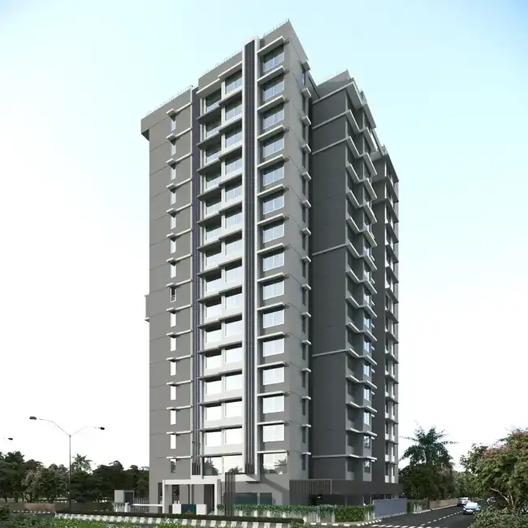
A COMPLETE SPATIAL VIEW
ArtisanMate works across the building, the plan and the lived experience — balancing proportion, movement, material, light and practical execution.
SELECTED WORK
The homepage is the exhibition. Individual project pages carry the fuller visual story.
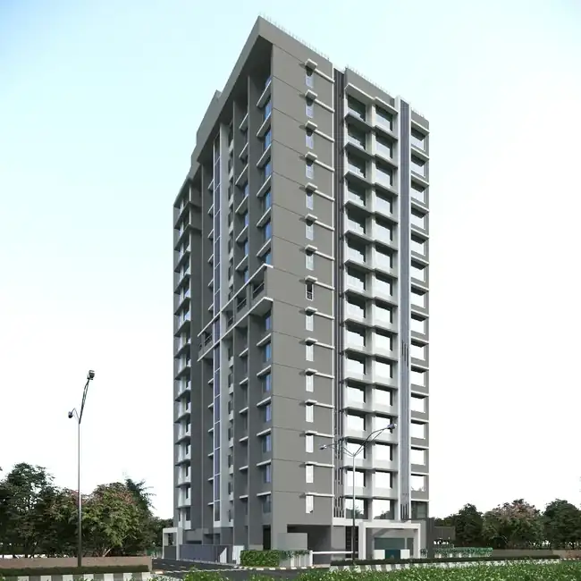
↗Facade rhythm, vertical articulation and landscaped edge.
 ↗
↗Composed massing with repeated openings and deep shadow lines.
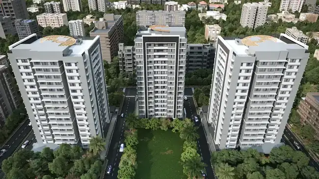
↗Multiple building masses organised around landscape and movement.
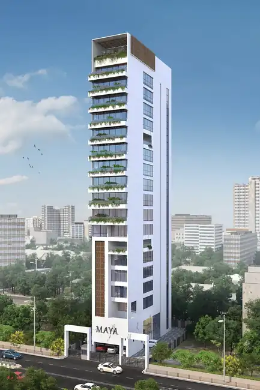
↗Slender vertical form with planted terraces and glazed openings.
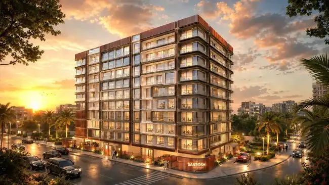
↗Broader massing, rounded framing and a warmer architectural presence.
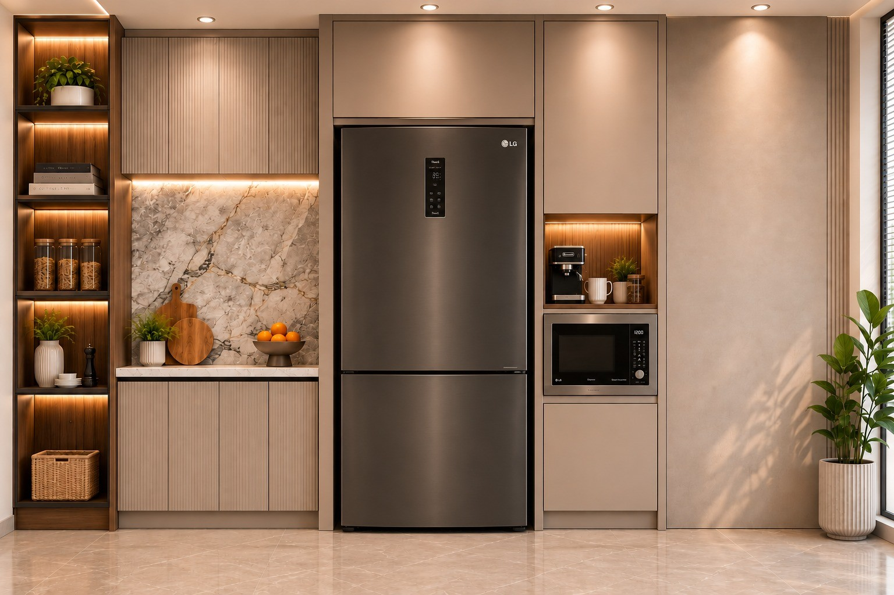
↗Material balance, storage and everyday function.
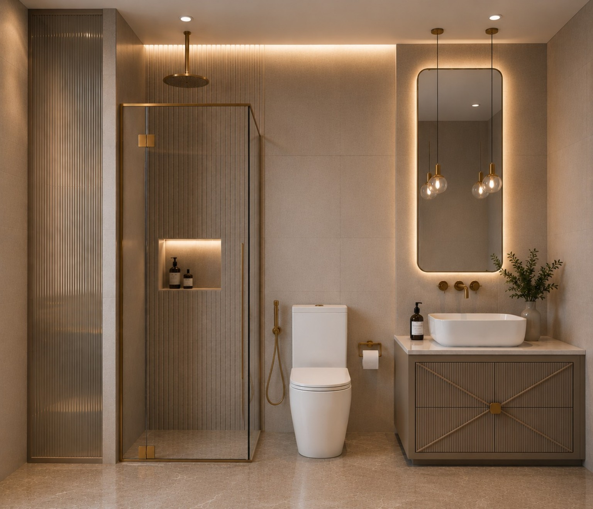
↗Quiet material transitions and considered detailing.
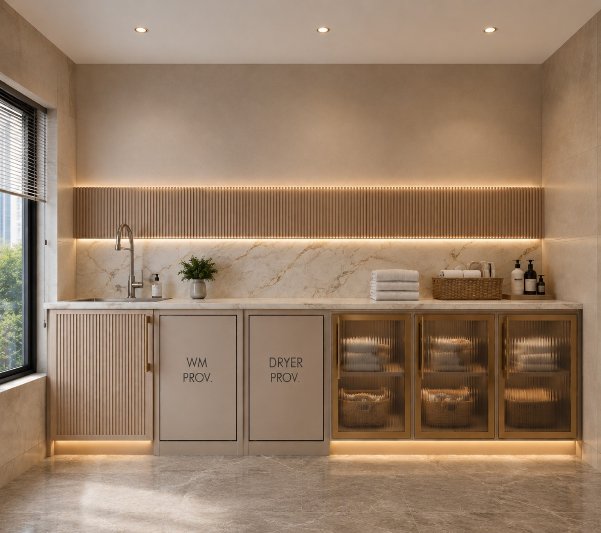
↗Compact planning shaped around real use.
ARCHITECTURE
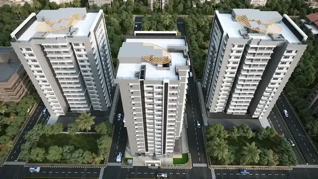
The architectural work shares a disciplined language: composed volumes, repeated openings, vertical fins, deep reveals, landscape and controlled contrast. Each project page keeps the visual reading grounded in what the supplied imagery actually shows.
View all architecture work ↗FROM STRUCTURE TO SPACE
The two disciplines sit in the same design conversation without forcing unrelated projects together.
INTERIORS
Spatial planning, material restraint and details that survive contact with everyday life.
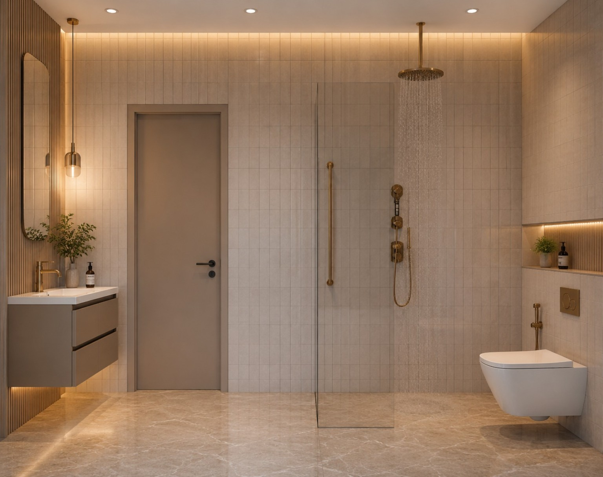
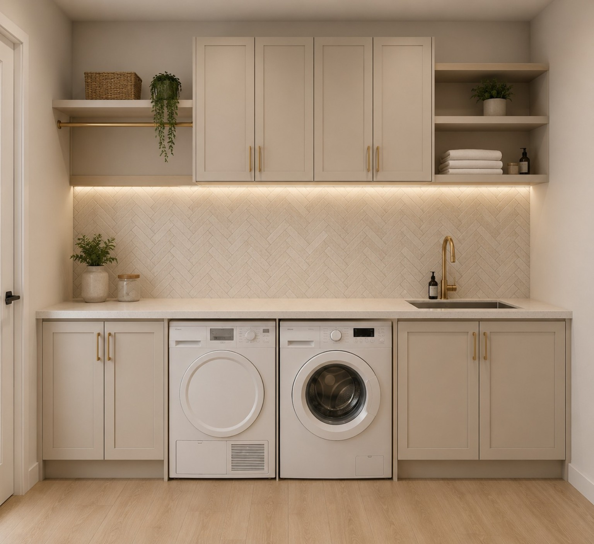
SERVICES
Concept development, architectural planning, facade design, residential and commercial architecture, renovation and transformation.
Residential and commercial interiors, space planning, material selection, furniture and styling.
Design coordination, execution management, vendor coordination and project delivery.
Architecture, interiors and space-planning consultation for projects at any stage.
APPROACH
Brief, context, constraints and how the space needs to perform.
Planning, proportion, facade or interior language and material direction.
Details, coordination and decisions that turn the concept into something buildable.
TRANSFORMATION
The existing before/after interaction remains part of the experience.
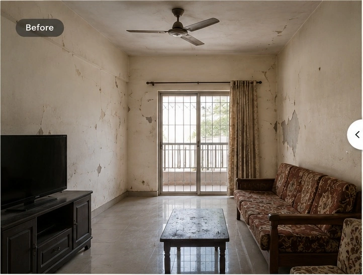
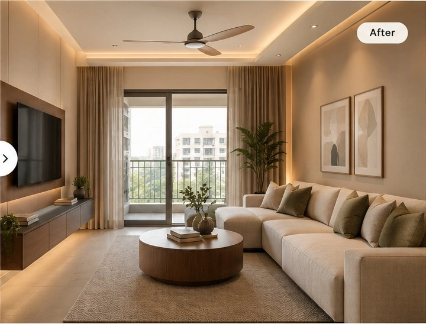
ABOUT ARTISANMATE
ArtisanMate brings architecture, interiors and practical execution into one design conversation. The focus is on context, function, materiality and human experience — with enough restraint to let the project speak for itself.
Architecture + Interiors + Spatial Design + Turnkey Design Solutions
START A PROJECT
Share a few details. We’ll use them to understand the scope before the first conversation.